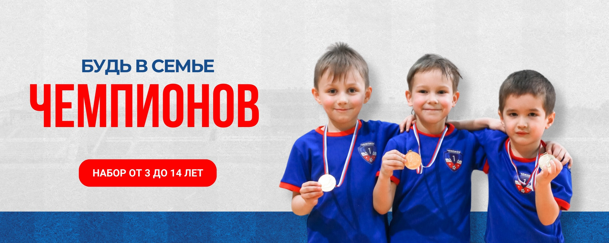

Будь в семье чемпионов
Футбол для детей 3–14 лет в Казани
ДФА «Чемпион» помогает ребёнку раскрыться в спорте через игру, дисциплину, поддержку тренеров и насыщенную футбольную среду. Первый шаг можно сделать уже сейчас — через бесплатную пробную тренировку.
Круглогодичный набор
От 2 до 6 тренировок в неделю
Современные площадки

Первая тренировка бесплатно
Родители могут познакомиться с академией, а ребёнок — с атмосферой, тренером
и площадкой без лишнего давления.
Что делает клуб сильным
Спортивная школа, где ребёнок видит прогресс и чувствует поддержку
В академии «Чемпион» футбол — это не только техника и нагрузка. Это среда, где ребёнок учится взаимодействовать, держать темп, уважать команду и получать удовольствие от движения.
Уже в первую неделю занятий ребёнок знакомится с мячом, базовыми движениями, ритмом тренировки и ощущением команды.
Для младших групп обучение строится через увлечённую игру, чтобы спорт ассоциировался с радостью и уверенностью, а не с давлением.
Техника, физическая подготовка, понимание поля и дисциплина развиваются постепенно и с учётом возраста каждого ребёнка.
Для мотивированных воспитанников академия становится ступенью к серьёзному футболу и переходу в более сильные команды.
Факты о школе
Клуб строится на стабильной методике, регулярной практике и футбольной среде
Мы собираем вокруг ребёнка не разовую секцию, а целую систему развития: тренеры, турниры, лагеря, игровые дни и привычку быть в спорте круглый год.
Что получит ребёнок
Прогресс на поле, уверенность в игре и привычку работать на результат
Мы собрали на сайте ключевые преимущества, которые родители ожидают от хорошей футбольной школы и которые академия действительно даёт ребёнку в процессе занятий.
Занятия укрепляют координацию, скорость, выносливость и привычку к регулярной физической активности.
- Общая физическая подготовка без перегрузок
- Базовые футбольные движения и работа с мячом
- Поэтапное развитие техники с учётом возраста
Дети не просто бегают за мячом, а начинают понимать игровые эпизоды, партнёров, роли и логику командной игры.
- Теоретико-тактические знания, закреплённые практикой
- Участие в игровых ситуациях и матчевых заданиях
- Формирование понимания позиции и командного взаимодействия
С раннего возраста дети включаются в турниры, товарищеские матчи и клубные чемпионаты, чтобы расти не только на тренировке, но и в игре.
- Регулярные внутренние турниры и чемпионаты
- Выездные соревнования и первые медали
- Навык справляться с волнением и работать на команду
Футбол помогает ребёнку становиться смелее, дисциплинированнее и увереннее в себе, сохраняя при этом радость от процесса.
- Командный дух и уважение к партнёрам
- Умение слушать тренера и доводить дело до конца
- Мотивация к развитию и спортивным целям
События и жизнь клуба
На главной — ключевые форматы, которые делают школу живой и заметной
Вокруг тренировок в «Чемпионе» строится насыщенная клубная жизнь: соревнования, лагеря, встречи с родителями и дополнительные активности для всей семьи.
Где проходят тренировки
Две ключевые площадки для занятий, игр и тренировочного ритма
Академия тренируется на современных объектах в Казани. Это позволяет проводить занятия круглый год и подбирать подходящую среду для разных форматов тренировок.
Основная база клуба с игровой и тренировочной инфраструктурой. Пространство подходит для системной подготовки и регулярных занятий в течение сезона.
- Адрес: ул. Рауиса Гареева, 80, Казань
- Подходит для тренировок и игровых дней
- Комфортный доступ для родителей и детей
Крытый футбольный манеж помогает держать тренировочный темп в любую погоду и сохранять ритм подготовки без сезонных пауз.
- Адрес: ул. Хусаина Мавлютова, 4, Казань
- Удобен для круглогодичных занятий
- Хорошо подходит для интенсивного игрового формата
В тёплый сезон дети больше тренируются на открытом воздухе, участвуют в матчевой практике и получают дополнительную выносливость за счёт природной среды.
- Тренировки на свежем воздухе летом
- Полезный режим для восстановления и выносливости
- Живой футбольный опыт за пределами зала
Попасть на первую тренировку можно уже сейчас
Быстрый путь для родителей: открыть внешнюю форму записи, оставить контакты и выбрать удобный способ первого знакомства с академией.
Следующие разделы
Сайт уже готов к росту: важные разделы выведены в структуру с первого релиза
Мы сразу закладываем навигацию под будущие материалы, чтобы сайт можно было расширять без переделки логики и меню.
В разделе собран тренерский состав академии и краткая информация о том, как подбираются группы для детей разных возрастов.
Посмотреть тренеровСледующим этапом здесь можно расширить медиаконтент клуба: фото с турниров, новости академии, видео и яркие истории воспитанников.
Открыть разделВ разделе собраны реальные отзывы родителей о тренировках, атмосфере клуба и прогрессе детей.
Смотреть отзывы